Nonlinear Schrödinger evolution on a surface of revolution with metric
ds² = dx² + A(x)²dθ², A(x)=√((1+cos²x)/2).
Mass-conserving Laplace–Beltrami assembly, Crank–Nicolson time-stepping, Picard nonlinear solve.
A Python companion to the lumpy-torus study.
All 3-D frames are rendered on the metric-faithful crescent immersion.
The question. This surface is engineered to ask one thing, posed in the
source post: can a focusing
nonlinearity, working with the curvature, concentrate a wave hard enough along a stable geodesic
to blow up in finite time? It sits at the meeting of three threads — dispersive PDE, spectral geometry,
and semiclassical analysis — and the geometry makes them visible: a belly where the equatorial
geodesic is stable (elliptic) and necks where it is not (hyperbolic).
The arc. The linear geometry already traps waves — whispering-gallery quasimodes bound in the
centrifugal well (§02). Turn on focusing and those become the nonlinear quasimodes that
Albin–Christianson–Marzuola–Thomann proved stay localized near an elliptic geodesic (§08). Push the mass
up and the trapped ring undergoes mass-critical collapse — the blow-up itself, which Godet made rigorous
on a curve for rotationally-symmetric surfaces at the log-log rate. Then §10 turns the geometry
into a control field and goes past the original question, into chaos, lattices, parametric amplification,
an expanding-universe analogue, topological edge channels, and device design.
01Geometry & curvature
One period x∈[−π/2, π/2] (ends identified) has exactly
one elliptic geodesic (belly, K=+0.5) and one hyperbolic
(neck, K=−1).
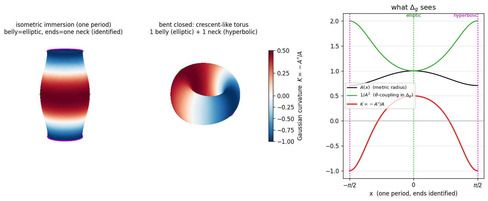
Left: the isometric neck–belly–neck immersion. Middle: bent closed into the
crescent torus used for every field render, colored by Gaussian curvature
K=−A″/A. Right: the Laplace–Beltrami inputs
A, 1/A² (peaks at the necks), K.
02Why it works — the centrifugal-barrier reduction
Separating u = e^{ikθ}φ(x) turns Laplace–Beltrami into a 1-D
Schrödinger operator with effective potential V_k(x)=k²/A² — the same
centrifugal barrier as the atomic radial equation. Both the quantum modes and the classical
geodesics live on this well/barrier structure.
Why geodesics at all? Because they are the characteristics of the operator, not a
metaphor. The linear part i∂_t u = −Δ_g u has principal symbol
|ξ|²_g, whose Hamiltonian flow is exactly the geodesic flow. So in the
high-frequency (semiclassical) limit a wave packet's centre rides a geodesic and its
transverse width obeys the Jacobi equationJ″ + K J = 0 along it —
geometric optics on a manifold. Geodesic stability then fixes the packet's fate: bounded
(oscillatory) Jacobi fields on a stable orbit keep it concentrated (§05, §07); exponentially growing
ones on an unstable orbit spread it. The nonlinearity σ|u|²u is lower-order — it
rides on top of this geodesic transport, so a stable geodesic is where a focusing beam stays put
long enough to concentrate and blow up (§08). That is the whole reason to ask, first,
which geodesic, and is it stable? — and why the classical phase portrait below and the quantum
ladder are the same object seen two ways.
How the geometry enters the operator. The metric ds² = dx² + A(x)²dθ²
has volume element √|g| = A and inverse metric
g^{xx}=1, g^{θθ}=1/A², so the Laplace–Beltrami operator is the flat Laplacian
dressed by the metric:
Δ_g u = (1/A) ∂_x(A ∂_x u) + (1/A²) ∂²_θ u = u_xx + (A'/A) u_x + (1/A²) u_θθ
Weak form (what the solver assembles) — test against v, integrate by parts on the closed
surface (no boundary term):
stiffness: ∫⟨∇u,∇v⟩_g dV = ∬ [ A · u_x v̄_x + (1/A) · u_θ v̄_θ ] dx dθ
mass: ∫ u v̄ dV = ∬ A · u v̄ dx dθ
So the geometry is just a set of weights: A weights the x-stiffness and
the mass, 1/A the θ-stiffness. Discretely these become a Hermitian stiffness
K and a positive lumped-diagonal mass M; because both are
symmetric the scheme conserves ∫|u|² = UᴴMU to machine precision — the metric is
baked into the conserved quantity.
The local geometry, in two Taylor expansions. Everything follows from how the generating radius
A behaves at its critical points — near the belly (x=0)
and a neck (x = π/2 − ξ):
Fed into the angular-momentum potential V_k = k²/A²:
belly: V_k ≈ k² + ½ k² x² → a harmonic WELL, spring constant k² (frequency ω = k)
neck: V_k ≈ 2k²(1 − ξ²) → an inverted parabola: a BARRIER
That is the whole story in two lines: the belly is a harmonic trap of frequency
k, so its bound quasimodes have width ~k^{-1/2} and
breathe at frequency k (the semiclassical beam), and its depth
~k² sets how many bind; the neck is a barrier that expels.
Why the NLS cares. The linear operator sets the stage — well at the belly, barrier at the neck
— and σ|u|²u adds self-attraction. Dynamics is a contest between dispersion
(spreading, governed by Δ_g) and self-focusing. Where the geometry both
traps and has positive curvature (the belly), the two conspire: the wave is held in place and pulls
itself together — concentration, and above a threshold, blow-up. Where it expels and the curvature is
negative (the neck), it spreads. The surface doesn't merely bend the space the wave lives in; it
spatially biases the dispersion-vs-focusing balance — which is precisely why a stable geodesic is
the place to look for collapse.
A Fourier-analytic lens. Almost every panel below is clarified by looking in Fourier space —
the dual of the real-space well/barrier picture.
• θ-Fourier diagonalizes the linear flow. With u = Σ_k û_k(x)e^{ikθ} the
axisymmetric operator is block-diagonal — each angular momentum evolves alone, and
k²/A² is exactly the θ-Fourier symbol of the angular Laplacian, weighted by the
metric. The whispering-gallery ladder is "one Fourier mode at a time."
• The nonlinearity is convolution — it couples the modes.|u|²u = û ∗ û̄ ∗ û mixes angular momenta, and that coupling is the engine of
every instability here: it feeds a pump mode into sidebands. The necklace collapse,
Benjamin–Feir, and the Faraday waves are the same phenomenon in Fourier space —
exponential growth of sideband modes — differing only in their gain spectrum
γ(m). The ring "fragmenting into hot spots" is an azimuthal Fourier cascade.
• Revivals are Fourier rephasing. The Talbot carpet is the phases
e^{-in²t} realigning: at t=2π every
n²t is a multiple of 2π (full revival); rational
fractions give Gauss-sum partial revivals. The recurrence is the Fourier phases coming back.
• Lattices are Bloch/Floquet. A periodic lump makes the x-Fourier (Bloch) label
q a good quantum number → the whispering-gallery bands
ω(q); disorder destroys it, and Anderson localization is the collapse of that
Fourier description.
• Beams are coherent states, and dispersion & horizons are about the symbol
ω_k. The semiclassical beam is a minimal-uncertainty wavepacket whose
breathing is its phase-space cell rotating in the transverse well. The comb-flattening prototype
literally shapes the dispersion relation ω_k=E_0(k) (its curvature
d²ω/dk² is the engineered dispersion), and the sonic horizon is where the flow
Doppler-shifts ω_k until an upstream mode's group velocity vanishes — a
degeneracy read straight off the Fourier symbol.
In one sentence: the geometry writes the dispersion relation ω_k(x), the
nonlinearity convolves the modes, and every instability, revival, band, and horizon is a statement about
how those Fourier modes phase, couple, or degenerate.
A pseudodifferential lens — the master lens the others fall out of. Everything above is
one statement: the operators here, −Δ_g and its angular slices
−∂_x² + V_k, are elliptic, self-adjoint pseudodifferential operators
(ΨDOs) of order 2 on the closed surface, and their principal symbolσ(−Δ_g)=|ξ|²_g=ξ_x²+k²/A(x)² carries all the geometry. On the torus there
are no charts to patch: the ΨDO is a Fourier multiplier dressed by A(x)
— the toroidal quantization of Ruzhansky–Turunen — which is exactly why the Fourier lens above
is global and rigorous, not a heuristic.
• Geodesics are the bicharacteristics. The Hamiltonian flow of the principal symbol on
T*Mis the geodesic flow (Clairaut) — the classical portrait of §02 is
the symbol's flow — and Egorov's theorem / propagation of singularities promote it to a
theorem: conjugating an observable by the propagator transports its symbol along that flow, so the
wavefront set of a solution rides those trajectories and a packet microlocalised over the elliptic belly
orbit stays trapped (§05, §08).
• The propagator is a Fourier integral operator.e^{itΔ_g} is an FIO
whose canonical relation is that flow; the Gaussian-beam / WKB construction (§07) is its
parametrix — phase solving the eikonal (Hamilton–Jacobi) equation, amplitude the transport
equation, whose leading term is precisely the Jacobi lawJ″+KJ=0. The
whispering-gallery quasimodes are the quantization of the elliptic orbit (a harmonic well of
frequency k); the nonlinearity σ|u|²u is a lower-order
rider on this ΨDO transport — not a ΨDO itself, but folded in microlocally by paradifferential
calculus (Bony), tamed by the same symbol machinery.
• Functional calculus ties off the spectral panels.f(−Δ_g) is again a
ΨDO — which is what makes the heat trace, the Weyl count ("hear the shape"), and the Schrödinger
propagator legitimate objects; the quasimode ladder and the revival (Talbot) carpet are two calls to the
same calculus. And when the geometry moves (next lens) the FIO's canonical relation moves with it:
pair production is the propagator failing to preserve the vacuum's positive-frequency splitting as the
symbol's characteristic set sweeps. Framework: M. Taylor,
Lectures on
pseudodifferential operators; Ruzhansky–Turunen,
Quantization of ΨDOs on the torus.
A dynamical lens — static geometry → time-varying geometry. Every lens so far fixes
A(x). Let it move, A=A(x,t) (equivalently ramp the
ring radius / scale factor a(t)), and the ΨDO becomes a time-dependent
family: the dispersion relation ω_k(t) it writes now sweeps, and a mode that
was an eigenstate is pumped into its partners. One new control axis with three faces — all runnable from
the same solver, all in §10:
• Periodic drive → parametric Faraday resonance: a belly breathing at
Ω=2ω_n amplifies a Bogoliubov mode out of noise.
• Monotonic ramp → cosmological particle production: an expanding ring redshifts its modes,
ω_k=ck/a(t), and the adiabatic vacuum can't follow — phonon pairs appear with a
scale-invariant plateau and Sakharov oscillations, the analogue platform of Viermann et al.
(Nature, 2022).
• Stationary flow through the fixed throat → an analog horizon: a transonic superfluid traps
sound at the neck, a geometry-made black hole.
Static geometry bends where modes go; dynamic geometry decides which modes exist — the
metric becomes a source that mixes the vacuum, and it can act back on the nonlinearity itself: breathing
the belly resonantly delays or hastens the fast necklace collapse and fully arrests the slow
single-hump one into a stable breather (§10), the control-knob face of this axis. And a spatial twist is
not even needed for topology — a two-step time-drive alone makes Floquet edge modes at
quasienergy 0 and π (§10).
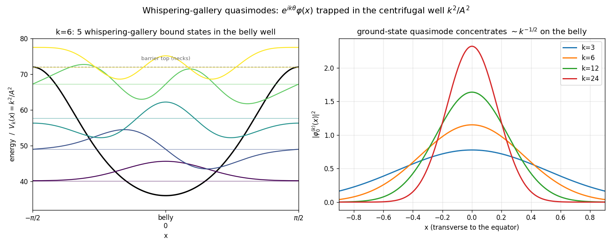
Quantum.V_k is a well at the belly (A=1)
with barriers at the necks (A=0.707). Its bound states are the
whispering-gallery quasimodes; the ground state sharpens ~k^{-1/2} —
exactly the semiclassical beam width.
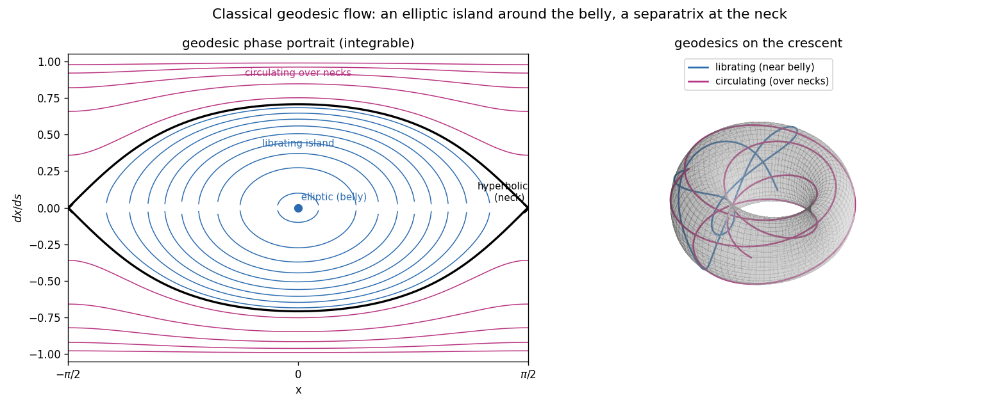
Classical. The integrable geodesic flow (Clairaut) has the identical
L²/A² potential: an elliptic island of librating orbits around the
belly, a separatrix at the neck, circulating orbits beyond — the skeleton the quasimodes sit on.
03Solver validation
A focusing equation near blow-up is unforgiving: a scheme that leaks or injects energy will
fake a collapse that isn't there, or smother one that is. So the licence for every later claim sits
here — the structure-preserving Laplace–Beltrami assembly conserves ∫A|u|² to
machine precision and energy to ~10⁻⁵ over a thousand steps, so when the ring does
collapse (§08) we know it is the physics, not the discretisation.
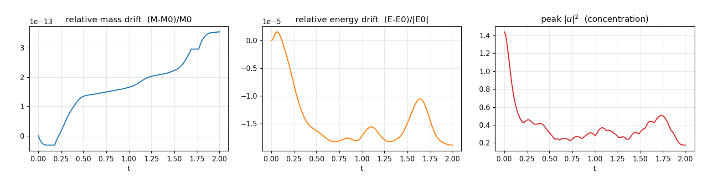
Mass conserved to ~10⁻¹³ and energy to ~10⁻⁵ over 1000 Crank–Nicolson steps —
the diagnostics the reference FreeFEM script omitted.
04The field on the lumpy torus
Two views of the same field, and it pays to read both. The crescent immersion is what
the surface looks like; the (x,θ)chart is where the operator
lives — where θ-Fourier diagonalises the linear flow and the centrifugal
potential k²/A² is plain to see. Every animation below is one view or the other.
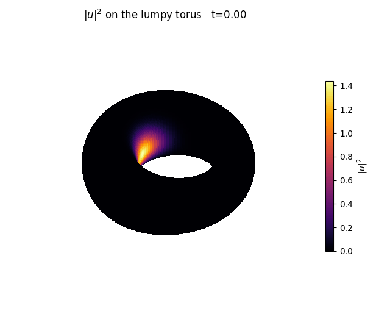
3-D|u|² on the crescent immersion.
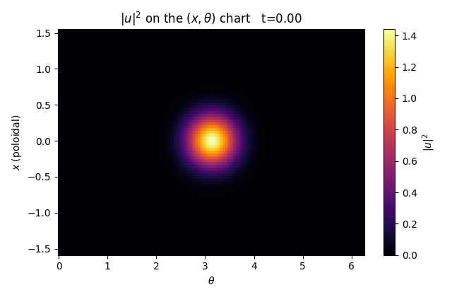
chartThe same field on the (x,θ) chart.
05Geodesic stability (linear)
Before any nonlinearity, put the geometry's own question (§02) to the test: launch a beam
along a parallel geodesic and watch its transverse width. On the elliptic belly the Jacobi field
stays bounded and the beam holds together; on the hyperbolic neck it grows and the beam sheds off
the pinch. Stable vs unstable orbit, side by side — the linear skeleton every later panel hangs on.
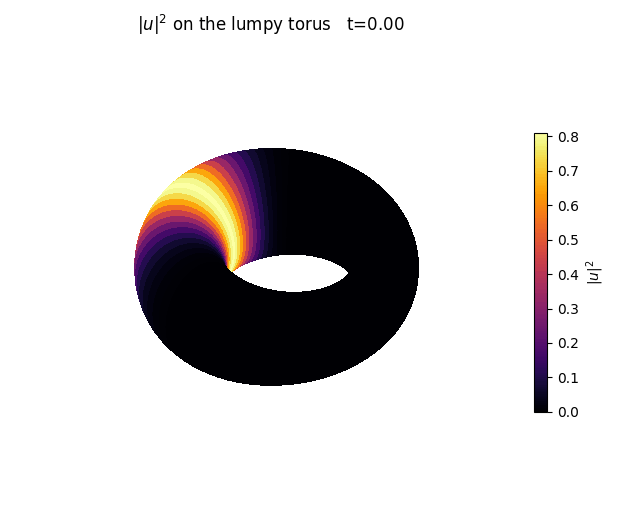
Elliptic (belly). A confined bright band — the stable geodesic.
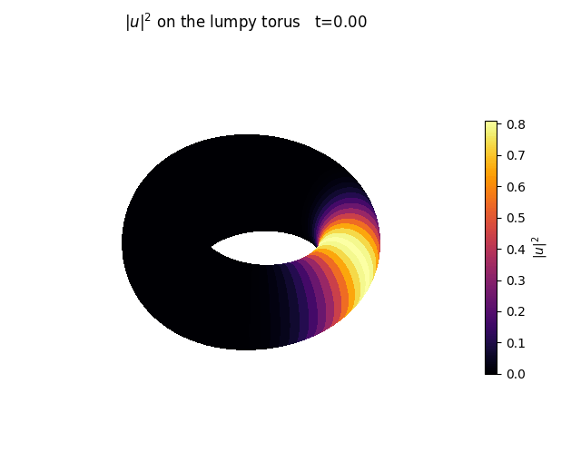
Hyperbolic (neck). Disperses off the pinch — the unstable geodesic.
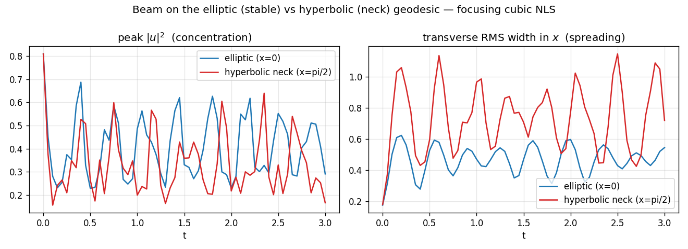
Transverse width stays bounded on the elliptic equator; swings ~2× larger on the neck.
06Running over the bumps: the meridian beam
The meridians are the other geodesic family — and unlike the equator they are not stable
orbits: each one crosses the K>0 belly and the K<0
necks, so its transverse width solves a Hill/Floquet equation, not a harmonic one. The prediction: focus at
the necks, defocus over the belly — exactly as meridians converge at a sphere's poles.
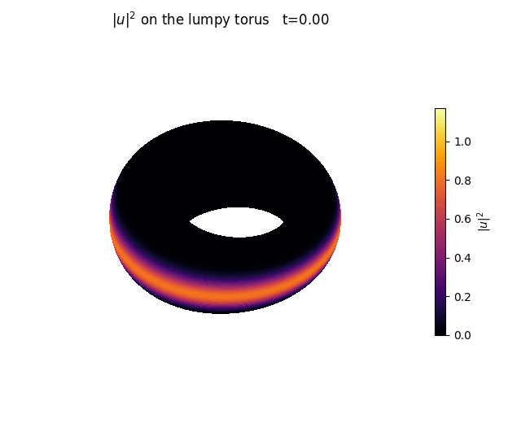
3-DA beam concentrated along a meridian, crossing belly and necks.
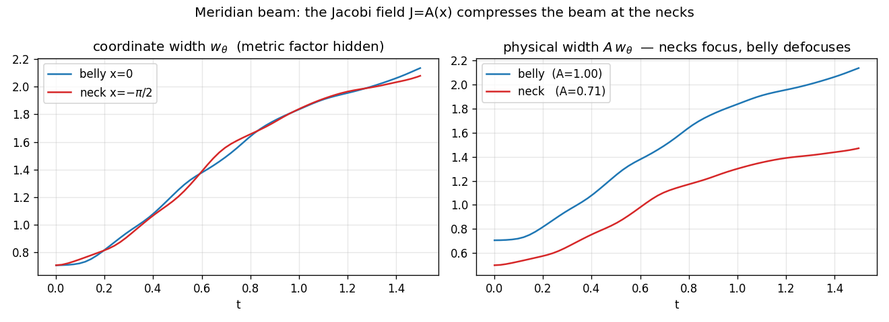
Physical width tracks the Jacobi field J(x)=A(x): the necks focus,
the belly defocuses — as on a sphere, where meridians converge at the poles.
07Semiclassical beam
Push the angular momentum high — the semiclassical limit — and the ray/wave correspondence
sharpens into view: the packet becomes a true Gaussian beam (the FIO parametrix of §02) riding the
geodesic, its width breathing as A around the loop. Geometric optics on the
manifold, made literal.
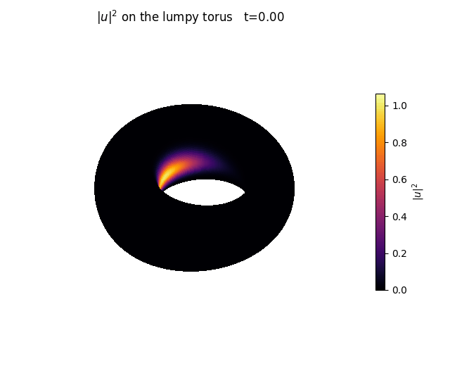
q=20The beam surfs the crescent loop, through the neck and over the belly.
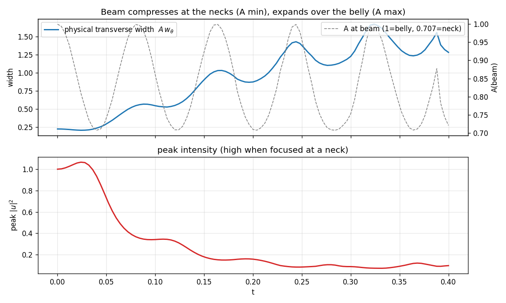
Transverse width tracks A(beam) — compress at necks, expand over belly.
08Self-trapping via focusing nonlinearity
On the stable equator a θ-symmetric ring reduces to 1-D — subcritical, so focusing can
self-trap it into a soliton (the meridian, lacking a transverse trap, only disperses or collapses).
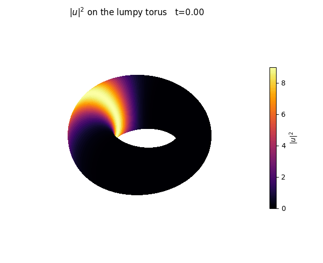
Focusing self-traps it tighter and brighter.
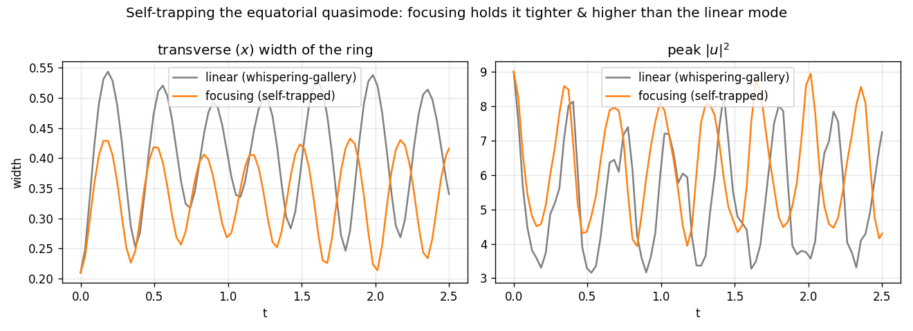
Focusing holds the ring at smaller width and higher peak than the linear mode.
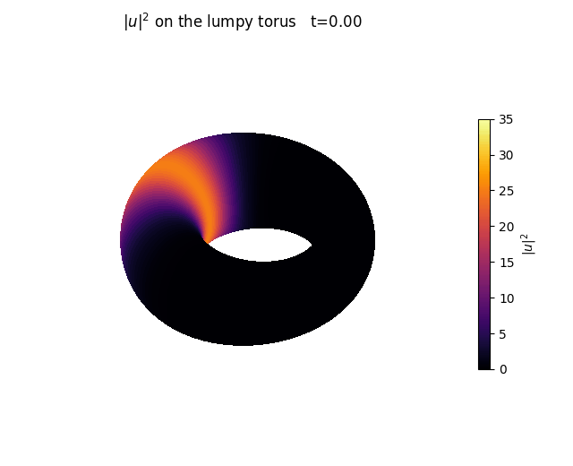
amp = 5The width locks into a soliton, then fragments into hot spots.
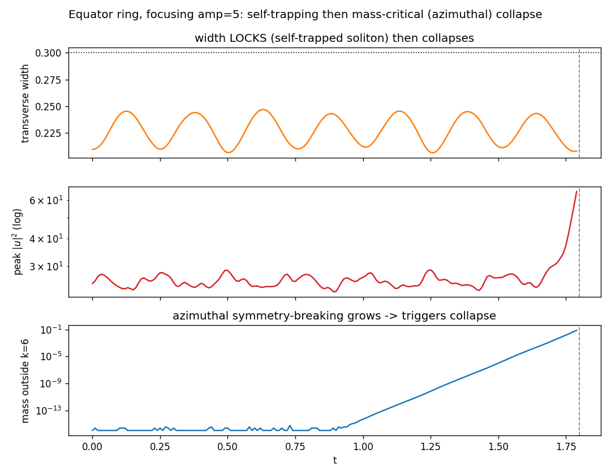
Azimuthal symmetry-breaking grows exponentially from machine roundoff
(10⁻¹⁵→10⁻¹) → mass-critical collapse at t≈1.8 (a "necklace" instability).
09Regimes, instabilities & bifurcation
What the geometry and the nonlinearity open up beyond the main experiments.
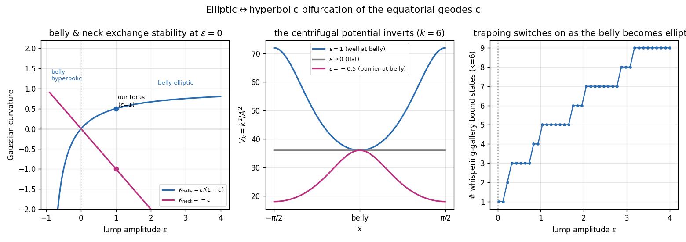
Elliptic↔hyperbolic bifurcation — the geometry knob. With the tunable family
A(x;ε)=√((1+ε cos²x)/(1+ε)) the curvatures are exactly
K_belly=ε/(1+ε), K_neck=−ε: belly and neck
exchange stability at ε=0. The centrifugal well inverts, and the whispering-gallery
bound states switch on as the belly turns elliptic. Our torus is ε=1.
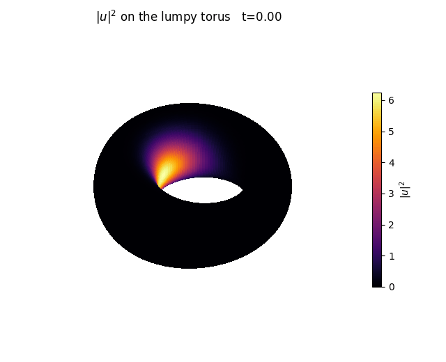
defocusingRepulsive σ=+1: a hump expands and
depletes its core — dispersive-shock / rarefaction dynamics, the opposite of self-trapping.
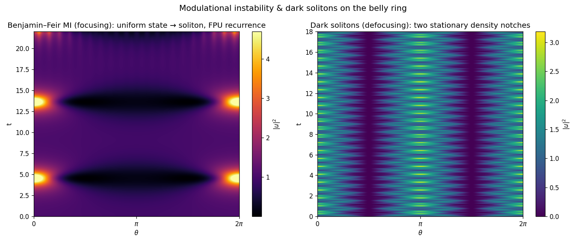
Modulational instability & dark solitons on the belly ring.Left: a focusing
uniform state is Benjamin–Feir unstable — it breaks into a soliton and recurs
(Fermi–Pasta–Ulam). Right: in the defocusing regime, two black solitons (stationary
density notches with π phase jumps) are stable.
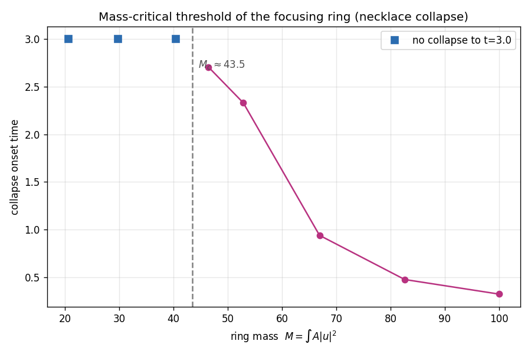
Mass-critical collapse threshold. Below M_c≈43 the focusing ring
never collapses; above it the necklace collapse sets in, its onset time falling off with mass.
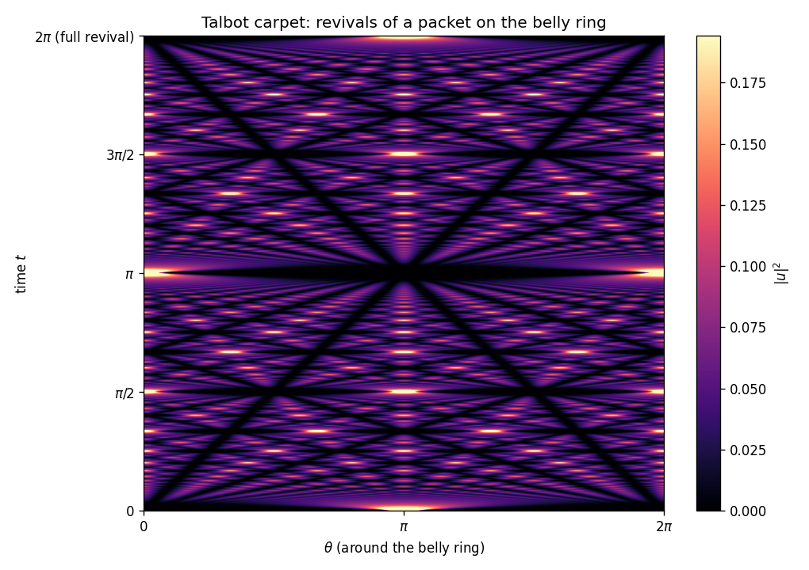
Quantum revivals (Talbot carpet). A packet released on the belly ring reforms at
t=2π (full revival) and rational fractions — the mechanism behind the
dispersive recurrence seen in the full runs.
10Research directions — geometry as a control field
The same tunable metric is a laboratory. Each panel is a proof-of-concept for a direction
where surface geometry steers nonlinear wave dynamics — some clean results, some sketches of open
questions, all runnable from the same solver.
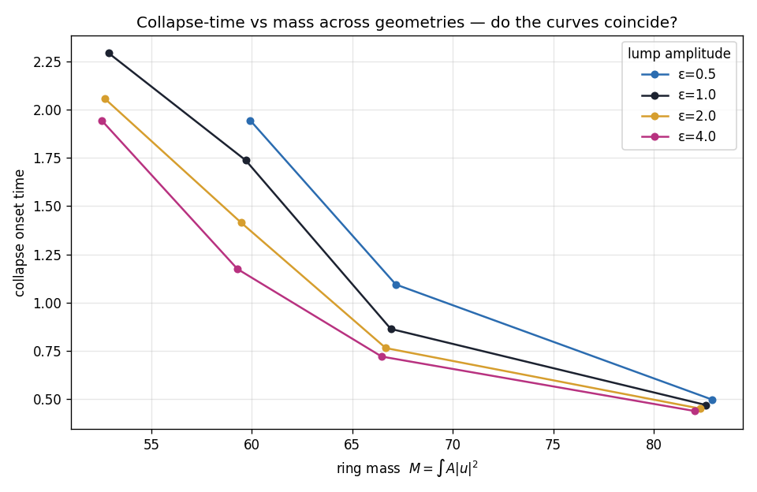
Geometry tunes the blow-up. Collapse-onset time vs ring mass for four lump depths —
the curves separate: deeper necks (larger ε) collapse sooner and at
lower mass. So the mass-critical (necklace) collapse — the blow-up the post set out to induce — is a
knob the geometry turns, not a fixed number.
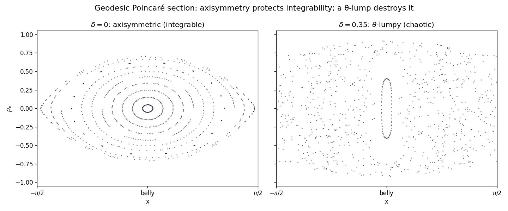
Break the axisymmetry, break integrability. Adding a θ-lump shatters the nested KAM
curves into a chaotic sea with a surviving belly island — the classical stage for quantum scarring
of the eigenfunctions, and for nonlinear transport in a mixed phase space.
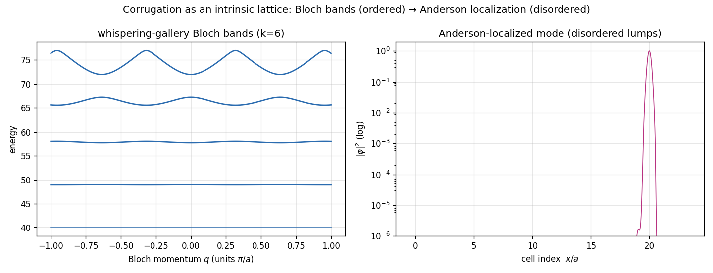
Corrugation is an intrinsic lattice. A periodic lump chain makes
V_k=k²/A² a periodic potential → whispering-gallery Bloch bands with
gaps; random lumps → Anderson-localized modes. No external potential — the geometry is the
lattice (and the disorder).
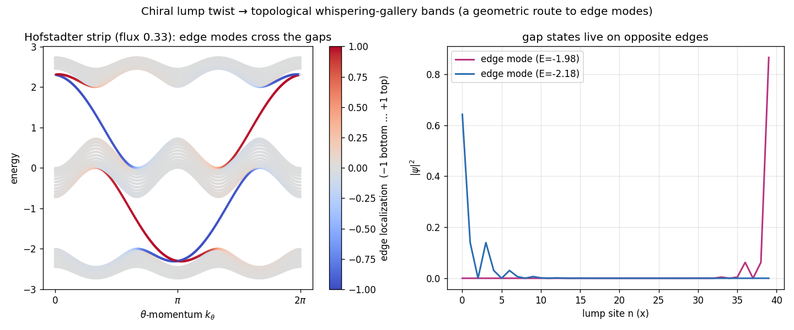
A chiral lump twist makes topological edge channels. Twist the lumps helically,
A(x−cθ): the WG on-site energy k²/A²(x−cθ) becomes the
Harper term 2λcos(2παn+k_θ), so the twisted-lump strip is the
Hofstadter model. Chiral edge modes traverse every gap (left, colored by which edge they hug),
carried by gap states pinned to opposite edges (right) — a purely geometric route to topological
photonics, whose time analogue is the Floquet drive in the next panel.
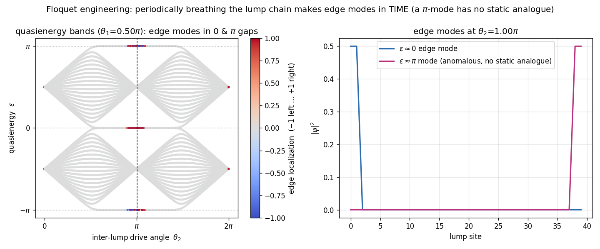
Floquet engineering — a time route to the edge modes. Breathe the lump chain
periodically instead of twisting it in space: a two-step hopping cycle (intra-lump bonds on, then
inter-lump) makes the one-period evolution operator carry quasienergy bands whose gaps host
chiral edge modes — at quasienergy ε=0 (a static-like mode) and at
ε=π, an anomalous mode with no static analogue (left), the two living on
opposite edges (right). The time-domain sibling of the chiral-twist bands above: drive, don't twist.
Real-world: Floquet photonics and periodically-driven cold atoms.
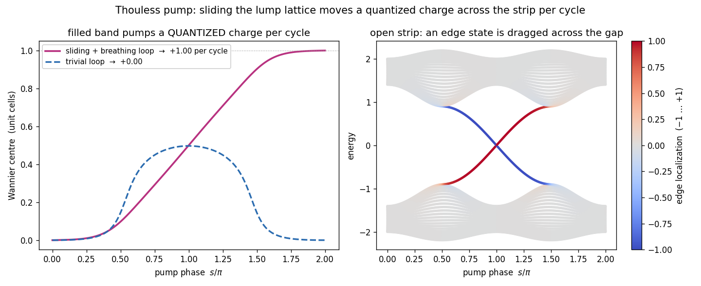
Thouless pump — quantized transport from a sliding lattice. Slide and breathe the lump
chain around a cycle and the filled band's Wannier centre winds by an integer: exactly one unit
cell pumped across the strip per period (left; a trivial loop pumps zero), independent of the drive's
details. On an open strip the same topology drags a single edge state across the gap from one
edge to the other (right). Robust, geometry-driven transport — the adiabatic cousin of the Floquet
drive above. Real-world: topological pumps in photonic waveguide arrays and cold atoms.
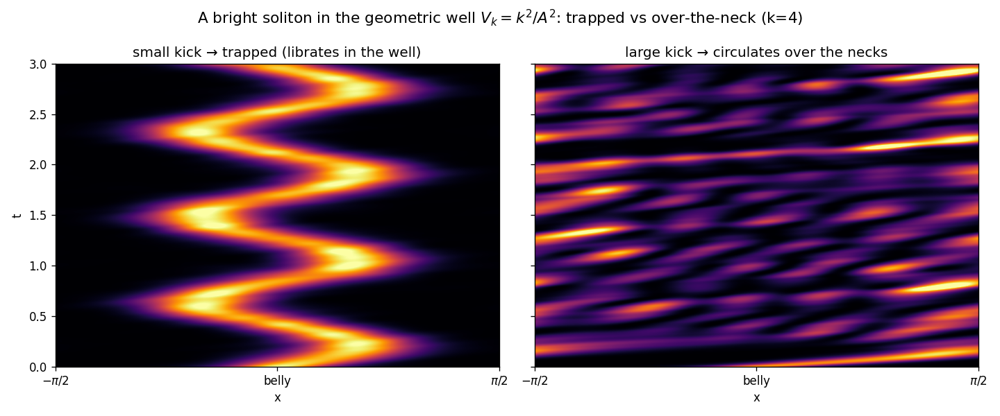
A soliton in the geometric well. A small kick leaves a bright soliton librating in
the belly; a larger one sends it circulating over the necks — the nonlinear echo of the geodesic
island/separatrix (§02).
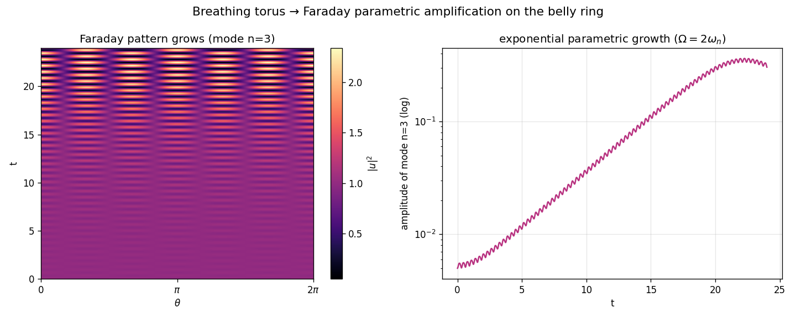
A breathing torus amplifies (periodic drive). Periodically modulating the geometry
parametrically pumps a Bogoliubov mode out of noise (Faraday waves, driven at
Ω=2ω_n). Run as a monotonic expansion instead → the next panel.
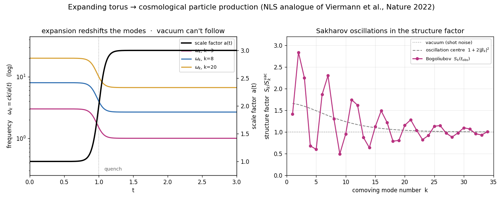
Prototype — the expanding torus makes particles from the vacuum (monotonic ramp).
Ramp the scale factor a(t) and every belly phonon redshifts
ω_k=ck/a(t) (left) until the adiabatic vacuum can no longer follow, so
the quench pumps phonon pairs out of nothing: a scale-invariant plateau
|β_k|²→(a_f−a_i)²/4a_ia_f (the inflationary analogue) whose density structure
factor rings with Sakharov oscillations (right) — the acoustic analogue of the CMB peaks.
Exact linear Bogoliubov theory, two-mode-squeeze Wronskian held to 10⁻¹³; the
NLS realisation of Viermann et al.'s expanding-universe BEC (Nature, 2022).
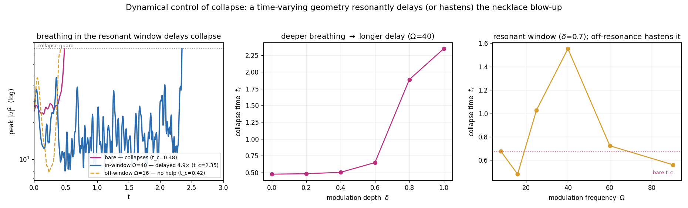
Prototype — dynamical control of the collapse (geometry vs the nonlinearity). Breathing
the belly makes the effective coupling g_eff∝1/A²(t) oscillate — "nonlinearity
management." It is a resonant knob on the necklace collapse: in a frequency window
(Ω≈40) deep breathing delays the mass-critical blow-up ~5×
(left; the delay grows with depth δ, middle); too slow
(Ω=16) and the drive parametrically feeds the very sidebands that fragment the
ring, so it gives no help or even hastens collapse (right). A geometric Kapitza /
Feshbach-management effect (Saito–Ueda) — the same idea, dynamic stabilization of a wave
instability, that plasma actuators use, and reduced-model kin to Langmuir-wave collapse. It only
delays this fast azimuthal collapse; the next panel shows the collapse it fully
arrests.
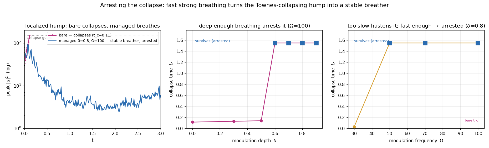
Prototype — arresting the collapse (the management the necklace resisted). Where
the blow-up is a single localized hump just above the mass-critical (Townes) threshold, the same
knob works cleanly. Bare, it self-focuses and blows up (t_c≈0.11, left,
pink); breathing the belly fast and hard (δ=0.8, Ω=100) turns it into a
stable breather whose peak settles to a bounded level (blue) and survives indefinitely — a
genuine arrest, above a depth threshold (middle) and a frequency threshold (right;
too slow a drive instead hastens it). Nonlinearity management (Saito–Ueda); here the belly's curvature
and trap supply what pure 2-D cubic management lacks. The contrast with the necklace is the
physics: a drive averages away a slow radial collapse but only delays a fast azimuthal
one.
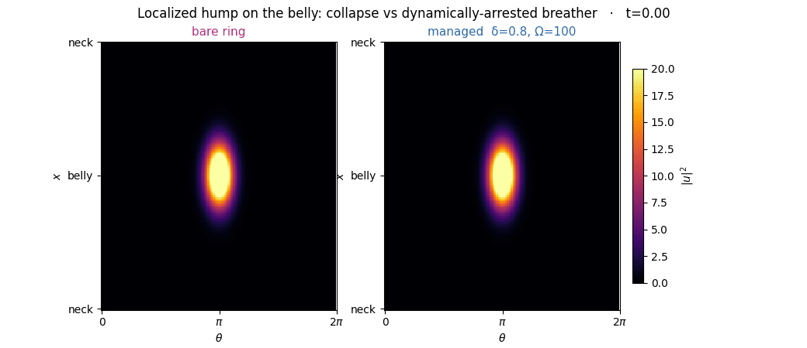
animationLeft: the bare hump self-focuses and collapses
(frozen once it blows up). Right: the same hump under fast belly-breathing survives as a pulsing
soliton — the blow-up dynamically arrested, side by side.
Prior art & where this sits. Arresting NLS collapse by modulating the
nonlinearity is Feshbach-resonance / nonlinearity management, established since 2003 (Saito–Ueda;
Abdullaev et al.; Kevrekidis et al.). What's ours is the framing: the modulation is a
geometric one — breathing the belly, g_eff∝1/A²(t) — and the
necklace-vs-hump contrast reproduces a subtle known result: nonlinearity management delays a
supercritical collapse but need not prevent it, yet fully arrests the near-critical hump. A 2025
analysis (Li–Ning–Zhao) makes the distinction rigorous — dispersion management can prevent
blow-up, nonlinearity management only postpones it. The same physics is a live control knob in
attractive BECs (the "Bosenova"), in self-focusing / filamentation of intense laser beams, and in
Langmuir-wave collapse in plasmas — the reduced-model bridge to the fusion-adjacent question (§10, dynamical
lens). Full cites in §11.
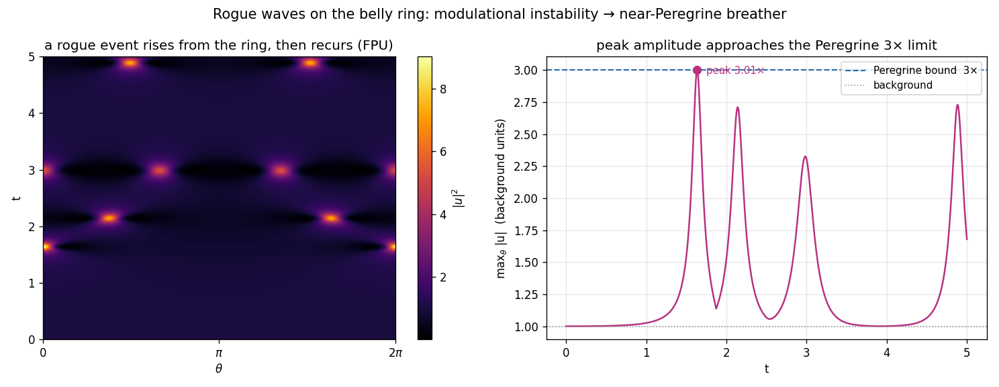
Rogue waves on the belly ring. Seed the focusing ring's longest-wavelength unstable
mode and modulational instability grows it into an Akhmediev breather — a wave that rises from
nowhere, peaks at 3× the background (right; the Peregrine rogue-wave limit, reached to
within 0.2%), and recurs (Fermi–Pasta–Ulam), the bright events walking across the ring (left). Geometry
is the knob: the effective coupling and A(x) set the MI gain, hence how tall and
how often the rogue events come. Real-world: optical and hydrodynamic rogue waves.
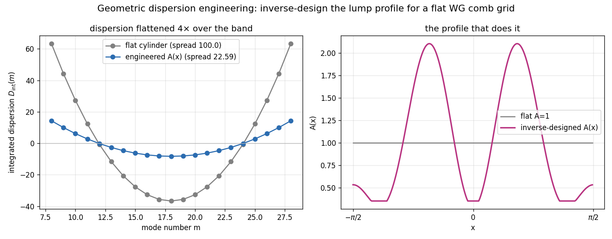
Prototype — geometric dispersion engineering. The WG spectrum
ω_m = E_0(m)is the resonator's modal dispersion, so the lump profile is
a design knob. Inverse-designing A(x) (a few harmonics) flattens the integrated
dispersion 4.4× over a mode band — a broadband, near-equidistant comb grid engineered by
geometry rather than waveguide cross-section.
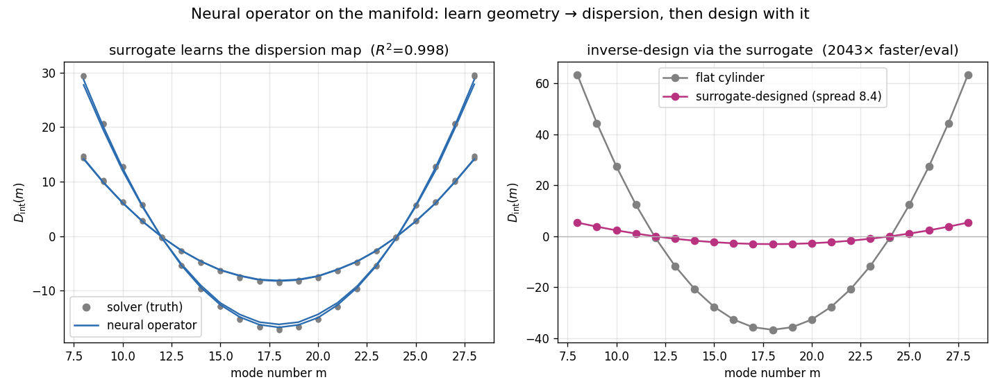
Prototype — a neural operator closes the ML-for-PDE loop. A small MLP learns the
forward map lump profile A(x) → modal dispersion
D_int(m) from solver data (R²=0.998), then stands in for
the eigensolver to inverse-design a flat-dispersion resonator ~2000× faster per
evaluation — flattening the integrated dispersion from a wide parabola to near-zero. The learned
surrogate for the exact geometry→spectrum map the post set out to motivate.
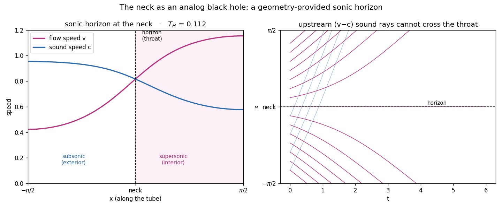
Prototype — the neck as an analog black hole. A transonic superfluid speeds up through
the small-A throat until the flow speed crosses the sound speed: a
sonic horizon provided by the geometry alone (Hawking temperature T_H
set by the throat's surface gravity). The upstream v−c sound rays diverge from
the throat and can never cross it — nothing escapes the interior.
Driven-dissipative (scaffolded, lle.py). A lump should pin a
dissipative Kerr soliton — the soliton-microcomb regime, and a microtoroid resonator is a lumpy
torus. Robust cavity-soliton nucleation needs a detuning-ramp protocol (a clean next step) rather than
a seeded pulse, so this one is left as an honest scaffold, not a finished figure.
Still open (application-grounded). The frontier directions above are now
prototyped — dispersion engineering, the analog horizon, the expanding-universe analogue, the
chiral-twist edge modes, and the neural operator. Still genuinely open: vortices on a curved
superfluid shell (NASA Cold-Atom-Lab bubble BECs) and their curvature pinning — a first pass
(vortices.py) launches a vortex–antivortex pair on the belly, but on this small ring the
pair orbits and annihilates faster than curvature can steer it, so the phase-singularity tracker is
sound-limited; a clean demonstration needs a larger shell and a single pinned vortex, left as honest
future work.
11Background & references
The experiment sits on a well-worn thread of geometry and physics — the reduction to a
centrifugal-barrier problem is the same structure that appears across these lines of work.
The direct backbone (what the post is after) — nonlinear quasimodes near a stable geodesic:
Albin, Christianson, Marzuola & Thomann,
Nonlinear quasimodes near elliptic periodic geodesics (2011)
— the NLS keeps a quasimode localized on the elliptic orbit (our self-trapping, §08); and
rigorous blow-up on a curve: Godet,
Blow up on a curve for a NLS on Riemannian surfaces (2012)
— focusing NLS blowing up on a curve, at the log-log rate, on rotationally-symmetric surfaces (our
collapse, §08–10). Also Sulem & Sulem, The Nonlinear Schrödinger Equation; Kac,
Can one hear the shape of a drum? (spectral geometry).
Whispering-gallery modes — Lord Rayleigh, The Problem of the Whispering Gallery (1910);
realized in ultra-high-Q optical microtoroid resonators: Armani, Kippenberg, Spillane & Vahala,
Nature421, 925 (2003).
The pseudodifferential / microlocal framework (the master lens of §02) — M. Taylor,
Lectures on
pseudodifferential operators (principal symbol, the propagator as an FIO, propagation of
singularities along the geodesic/Hamiltonian flow, functional calculus); and the ΨDO calculus built from
global Fourier series on the torus — Ruzhansky & Turunen,
Quantization of pseudo-differential operators on the
torus (2010) — the rigorous backing for the Fourier lens here.